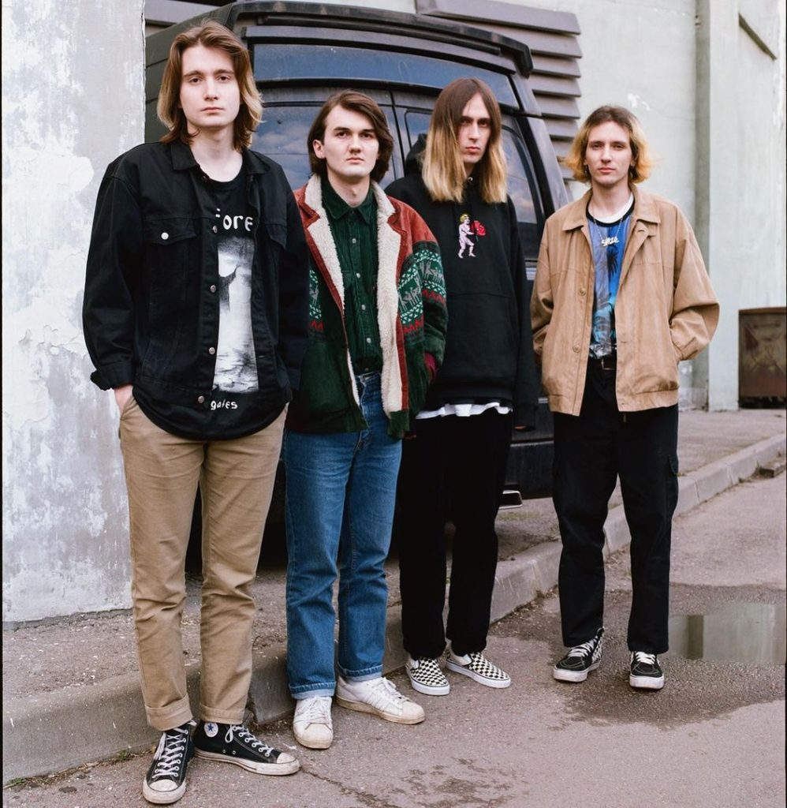

Биография
История создания группы ssshhhiiittt! началась в 2015 году. За это время музыкантам удалось пройти путь от непрофессиональных домашних демозаписей до участия в фестивалях и концертах, а главное — доказать, что отсутствие денег и связей не преграда для успеха.
История создания и состав
Лидер и вокалист Никита Кислов родом из Ростова (город в Ярославской области). Будучи подростком, занимался скейтбордингом, общался с единомышленниками. Затем парня увлекла музыка. Особенно на становление его как вокалиста и автора повлияло творчество коллектива «Валентин Стрыкало». Творческая биография группы ничем не отличается от тысяч подобных. Ростовчанин решил попробовать сам написать песню. Первые три композиции выложил в своем паблике во «ВКонтакте» в июне 2015 года. Тогда ему самому было сложно определить жанр, в котором хотелось бы развиваться, но уже в ранних попытках намечались общие тенденции. Кислов затрагивал лирические темы, при этом демонстрируя некий злой, мизантропический посыл.Музыка для эмоционального и чувствительного парня стала способом высказаться. Вскоре Никите удалось найти единомышленников из родной школы. С первым барабанщиком у солиста отношения не сложились, поскольку тот был фанатом треш-метала. Благодаря невероятной удаче ребятам удалось выйти на сцену на местных концертах, где до них играли металисты. Конечно, музыка ssshhhiiittt! звучала намного спокойнее и лиричнее, что не устраивало зрителей, пришедших на «шум». Так, в родном городе группа не прижилась, зато в Ярославле ее творчество нашло почитателей. Состав неоднократно менялся. Никита поделился в интервью, что все бывшие коллеги — хорошие люди, которые достойны уважения. Однако в профессиональном аспекте встречались проблемы. И когда пришло время выходить на некую контрольную точку, вопрос дружбы и признательности уходил на второй план.Сейчас в составе группы, кроме бессменного солиста, работают над написанием музыки и слов гитарист Виталий Исаков, басист Иван Грачев и барабанщик Александр Камод.